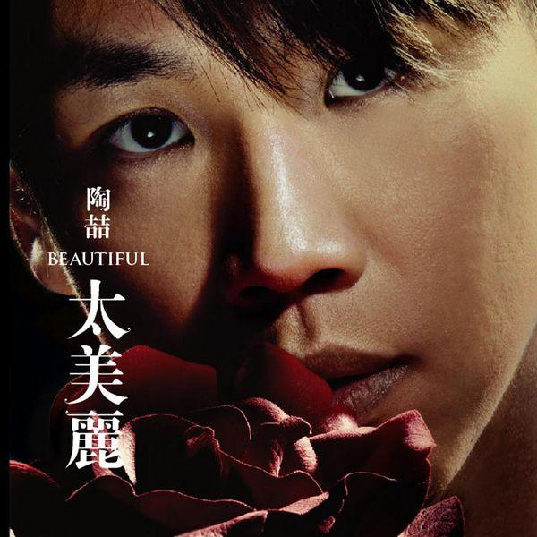

基本信息
| 本名 | 陶喆 |
|---|---|
| 英文名 | David Tao |
| 出生 | 1969年7月11日 |
| 出生地 | 香港 |
| 国籍 | 美国 |
| 职业 | 歌手、词曲作家、音乐制作人 |
| 音乐类型 | R&B、灵魂乐、摇滚、流行 |
| 称号 | 华语R&B教父 |
代表作品
爱很简单
黑色柳丁
今天你要嫁给我
飞机场的10:30
就是爱你
荣誉奖项
- 金曲奖最佳新人奖
- 金曲奖最佳专辑制作人奖
- 中华音乐人交流协会年度十大专辑
- 全球华语榜中榜最佳创作歌手
音乐生涯
陶喆被誉为"华语R&B教父"，是首位将纯正美式R&B引入华语乐坛的音乐人，对华语流行音乐产生了深远影响。
早年经历与音乐启蒙
陶喆出生于香港，成长于台湾和美国。在美国期间，他深受黑人音乐影响，特别是R&B和灵魂乐。大学时期主修心理学和电影，但音乐始终是他的最爱。
音乐风格与创新
陶喆的音乐以纯正的R&B为基础，融合灵魂乐、摇滚和流行元素。他的首张专辑《David Tao》彻底改变了华语乐坛的格局，将西式R&B与中文歌词完美结合。
音乐贡献
陶喆不仅是一位杰出的歌手，更是一位优秀的制作人，曾为张惠妹、陈奕迅、蔡依林等多位歌手创作和制作歌曲。
对华语乐坛的影响力
R&B本土化先驱
首次将纯正美式R&B与中文歌词结合，开创了华语R&B的新纪元。
制作人典范
树立了音乐制作人的专业标准，影响了新一代音乐制作人。
创作理念革新
强调"音乐性"和"原创性"，推动了华语乐坛创作理念的变革。
社会议题关注
在音乐中探讨社会问题，如《黑色柳丁》反映社会现实。
代表专辑

《David Tao》
1997年 · 出道专辑
被誉为华语乐坛R&B的开山之作

《黑色柳丁》
2002年 · 巅峰之作
音乐性与社会批判的完美结合

《太美丽》
2006年 · 成熟期作品
展现多元化音乐风格与深度情感
音乐理念
音乐性至上
陶喆坚持音乐本身的质量和艺术性，认为好的音乐应该超越语言和文化界限。
情感真诚
他的音乐总是充满真挚的情感，无论是爱情、友情还是对社会现象的思考。
不断创新
从不满足于现状，不断探索新的音乐风格和表达方式。
影响后辈
致力于培养新一代音乐人，分享自己的音乐经验和理念。